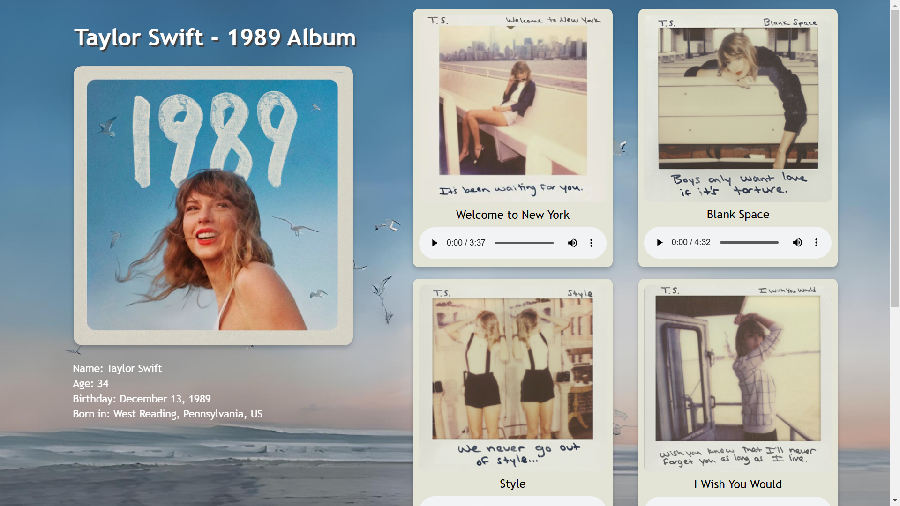

Showcase of My Projects

A piece of me
I’m Jay-R D. Maglaque, 19 years old and a second-year BSIT student in NEUST Sumacab. Finding out that websites are made with HTML and CSS got me excited about web development so, that made me really interested in computers and programming.
Right now, I’m just going with the flow, exploring web development at my own pace and learning as I go. As a second-year student, I’m taking things one step at a time, balancing my studies with hands-on learning in Web Systems Technology. While I’m currently focused on front-end development, I’m keeping an open mind and might try back-end development someday if it feels right.

As a second-year IT student, I have turned my initial desire in technology into actual abilities. I am skilled in web development (HTML, CSS, and JavaScript) and programming (CC-103, Java). Among my efforts are the development of responsive functional websites. These instances deepened my pledge of applying technology to address reality and improve the IT industry.
Choosing the STEM strand was an obvious progression since it gave me the opportunity to dig deeper into my fondness of technology. I improved my analytical skills during these years by mastering complex concepts in science and technology. My desire to pursue a profession in technology had been reinforced by the possibilities to apply scientific information to everyday tasks.
I grabbed every chance to increase my knowledge regarding technology while I was in junior high. I was able to experiment with doing barely projects like editorials and other tech-related stuff since I joined a school group that focused on technology. I built a foundation for my future studies with my consistent academic progress and developing interest in IT.
My expertise in technology started in elementary school, when I was constantly captivated by computers and frequently experimented with educational games and simple software tools, which piqued my interest in how technology functions.